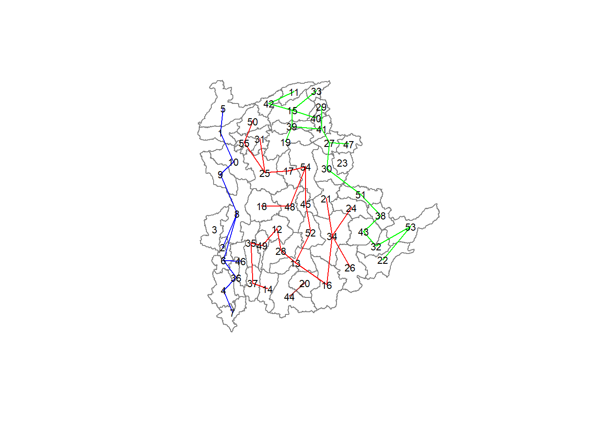
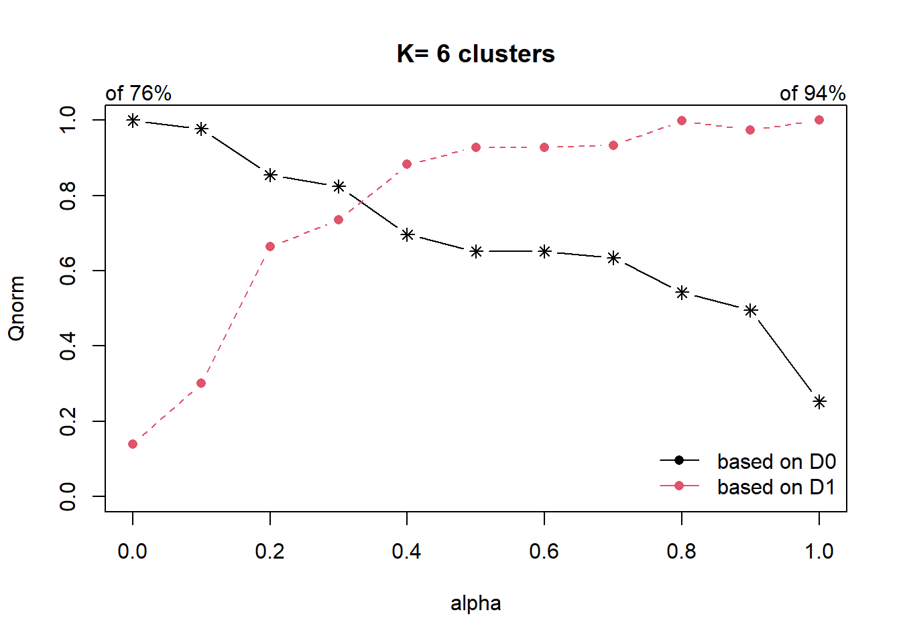

pacman::p_load(spdep, tmap, sf, ClustGeo,
ggpubr, cluster, factoextra, NbClust,
heatmaply, corrplot, psych, tidyverse, GGally)08 ‘Geographical Segmentation with Spatially Constrained Clustering Techniques’
This hands-on exercise is a continuation of hands-on exercise 07.
Overview
This exercise focuses on methods to delinate homogenous region by using geographically referenced multivariate data. There are 2 major analysis, namely:
- hierarchical cluster analysis, and
- spatially constrainted cluster analysis
Learning Outcome
(Copied from Exercise) By the end of this hands-on exercise, you will able:
to convert GIS polygon data into R’s simple feature data.frame by using appropriate functions of sf package of R;
to convert simple feature data.frame into R’s SpatialPolygonDataFrame object by using appropriate sf of package of R;
to perform custer analysis by using hclust() of Base R;
to perform spatially constrained cluster analysis using skater() of Base R; and
to visualise the analysis output by using ggplot2 and tmap package.
In geobusiness and spatial policy, it is a common practice to delineate the market or planning area into homogeneous regions by using multivariate data. In this hands-on exercise, we are interested to delineate Shan State, Myanmar into homogeneous regions by using multiple Information and Communication technology (ICT) measures, namely: Radio, Television, Land line phone, Mobile phone, Computer, and Internet at home.
Data
Two data sets will be used in this study. They are:
Myanmar Township Boundary Data (i.e. myanmar_township_boundaries) : This is a GIS data in ESRI shapefile format. It consists of township boundary information of Myanmar. The spatial data are captured in polygon features.
Shan-ICT.csv: This is an extract of The 2014 Myanmar Population and Housing Census Myanmar at the township level.
Both data sets are download from Myanmar Information Management Unit (MIMU)
Data Preparation
Import Packages
The following packages will be used for the analysis:
–
Import Data
shan_sf <- read_rds("data/rds/shan_sf.rds")
shan_ict <- read_rds("data/rds/shan_ict.rds")The Code
Converting into SpatialPolygonsDataFrame
shan_sp <- as_Spatial(shan_sf)Computing Neighbour List
shan.nb <- poly2nb(shan_sp)
summary(shan.nb)Neighbour list object:
Number of regions: 55
Number of nonzero links: 264
Percentage nonzero weights: 8.727273
Average number of links: 4.8
Link number distribution:
2 3 4 5 6 7 8 9
5 9 7 21 4 3 5 1
5 least connected regions:
3 5 7 9 47 with 2 links
1 most connected region:
8 with 9 linkscoords <- st_coordinates(
st_centroid(st_geometry(shan_sf)))plot(st_geometry(shan_sf),
border=grey(.5))
plot(shan.nb,
coords,
col="blue",
add=TRUE)
Computing minimum spanning tree
Computing Costs
lcosts <- nbcosts(shan.nb, shan_ict)Computing Weights
(Copied from Exercise):
Next, We will incorporate these costs into a weights object in the same way as we did in the calculation of inverse of distance weights. In other words, we convert the neighbour list to a list weights object by specifying the just computed lcosts as the weights.
Note that we specify the style as B to make sure the cost values are not row-standardised.
shan.w <- nb2listw(shan.nb,
lcosts,
style="B")
summary(shan.w)Characteristics of weights list object:
Neighbour list object:
Number of regions: 55
Number of nonzero links: 264
Percentage nonzero weights: 8.727273
Average number of links: 4.8
Link number distribution:
2 3 4 5 6 7 8 9
5 9 7 21 4 3 5 1
5 least connected regions:
3 5 7 9 47 with 2 links
1 most connected region:
8 with 9 links
Weights style: B
Weights constants summary:
n nn S0 S1 S2
B 55 3025 76267.65 58260785 522016004Minimum Spanning Tree
shan.mst <- mstree(shan.w)class(shan.mst)[1] "mst" "matrix"dim(shan.mst)[1] 54 3head(shan.mst) [,1] [,2] [,3]
[1,] 31 25 229.44658
[2,] 25 10 163.95741
[3,] 10 1 144.02475
[4,] 10 9 157.04230
[5,] 9 8 90.82891
[6,] 8 6 140.01101plot(st_geometry(shan_sf),
border=gray(.5))
plot.mst(shan.mst,
coords,
col="blue",
cex.lab=0.7,
cex.circles=0.005,
add=TRUE)
Computing spatially constrained clusters using SKATER method
clust6 <- spdep::skater(edges = shan.mst[,1:2],
data = shan_ict,
method = "euclidean",
ncuts = 5)str(clust6)List of 8
$ groups : num [1:55] 3 3 6 3 3 3 3 3 3 3 ...
$ edges.groups:List of 6
..$ :List of 3
.. ..$ node: num [1:22] 13 48 54 55 45 37 34 16 25 31 ...
.. ..$ edge: num [1:21, 1:3] 48 55 54 37 34 16 45 31 13 13 ...
.. ..$ ssw : num 3423
..$ :List of 3
.. ..$ node: num [1:18] 47 27 53 38 42 15 41 51 43 32 ...
.. ..$ edge: num [1:17, 1:3] 53 15 42 38 41 51 15 27 15 43 ...
.. ..$ ssw : num 3759
..$ :List of 3
.. ..$ node: num [1:11] 2 6 8 1 36 4 10 9 46 5 ...
.. ..$ edge: num [1:10, 1:3] 6 1 8 36 4 6 8 10 10 9 ...
.. ..$ ssw : num 1458
..$ :List of 3
.. ..$ node: num [1:2] 44 20
.. ..$ edge: num [1, 1:3] 44 20 95
.. ..$ ssw : num 95
..$ :List of 3
.. ..$ node: num 23
.. ..$ edge: num[0 , 1:3]
.. ..$ ssw : num 0
..$ :List of 3
.. ..$ node: num 3
.. ..$ edge: num[0 , 1:3]
.. ..$ ssw : num 0
$ not.prune : NULL
$ candidates : int [1:6] 1 2 3 4 5 6
$ ssto : num 12613
$ ssw : num [1:6] 12613 10977 9962 9540 9123 ...
$ crit : num [1:2] 1 Inf
$ vec.crit : num [1:55] 1 1 1 1 1 1 1 1 1 1 ...
- attr(*, "class")= chr "skater"ccs6 <- clust6$groups
ccs6 [1] 3 3 6 3 3 3 3 3 3 3 2 1 1 1 2 1 1 1 2 4 1 2 5 1 1 1 2 1 2 2 1 2 2 1 1 3 1 2
[39] 2 2 2 2 2 4 1 3 2 1 1 1 2 1 2 1 1table(ccs6)ccs6
1 2 3 4 5 6
22 18 11 2 1 1 plot(st_geometry(shan_sf),
border=gray(.5))
plot(clust6,
coords,
cex.lab=.7,
groups.colors=c("red","green","blue", "brown", "pink"),
cex.circles=0.005,
add=TRUE)
Visualising the clusters in choropleth map
Running the previous codes
proxmat <- dist(shan_ict, method = 'euclidean')
hclust_ward <- hclust(proxmat, method = 'ward.D')
shan_ict_mat <- data.matrix(shan_ict)
groups <- as.factor(cutree(hclust_ward, k=6))
shan_sf_cluster <- cbind(shan_sf, as.matrix(groups)) %>%
rename(`CLUSTER`=`as.matrix.groups.`)Continue
groups_mat <- as.matrix(clust6$groups)
shan_sf_spatialcluster <- cbind(shan_sf_cluster, as.factor(groups_mat)) %>%
rename(`SP_CLUSTER`=`as.factor.groups_mat.`)
qtm(shan_sf_spatialcluster, "SP_CLUSTER")
For easy comparison, it will be better to place both the hierarchical clustering and spatially constrained hierarchical clustering maps next to each other.
hclust.map <- qtm(shan_sf_cluster,
"CLUSTER") +
tm_borders(alpha = 0.5)
shclust.map <- qtm(shan_sf_spatialcluster,
"SP_CLUSTER") +
tm_borders(alpha = 0.5)
tmap_arrange(hclust.map, shclust.map,
asp=NA, ncol=2)
Spatially Constrained Clustering: ClustGeo Method
nongeo_cluster <- hclustgeo(proxmat)
plot(nongeo_cluster, cex = 0.5)
rect.hclust(nongeo_cluster,
k = 6,
border = 2:5)groups <- as.factor(cutree(nongeo_cluster, k=6))shan_sf_ngeo_cluster <- cbind(shan_sf, as.matrix(groups)) %>%
rename(`CLUSTER` = `as.matrix.groups.`)qtm(shan_sf_ngeo_cluster, "CLUSTER")
Spatially Constrained Hierarchical Clustering
dist <- st_distance(shan_sf, shan_sf)
distmat <- as.dist(dist)cr <- choicealpha(proxmat, distmat, range.alpha = seq(0, 1, 0.1), K=6, graph = TRUE)

clustG <- hclustgeo(proxmat, distmat, alpha = 0.2)
groups <- as.factor(cutree(clustG, k=6))
shan_sf_Gcluster <- cbind(shan_sf, as.matrix(groups)) %>%
rename(`CLUSTER` = `as.matrix.groups.`)qtm(shan_sf_Gcluster, "CLUSTER")
Visual Interpretation of Clusters
Code chunk below is used to reveal the distribution of a clustering variable (i.e RADIO_PR) by cluster.
ggplot(data = shan_sf_ngeo_cluster,
aes(x = CLUSTER, y = RADIO_PR)) +
geom_boxplot()
Multivariate Visualisation
ggparcoord(data = shan_sf_ngeo_cluster,
columns = c(17:21),
scale = "globalminmax",
alphaLines = 0.2,
boxplot = TRUE,
title = "Multiple Parallel Coordinates Plots of ICT Variables by Cluster") +
facet_grid(~ CLUSTER) +
theme(axis.text.x = element_text(angle = 30))In the code chunk below, group_by() and summarise() of dplyr are used to derive mean values of the clustering variables.
shan_sf_ngeo_cluster %>%
st_set_geometry(NULL) %>%
group_by(CLUSTER) %>%
summarise(mean_RADIO_PR = mean(RADIO_PR),
mean_TV_PR = mean(TV_PR),
mean_LLPHONE_PR = mean(LLPHONE_PR),
mean_MPHONE_PR = mean(MPHONE_PR),
mean_COMPUTER_PR = mean(COMPUTER_PR))# A tibble: 6 × 6
CLUSTER mean_RADIO_PR mean_TV_PR mean_LLPHONE_PR mean_MPHONE_PR
<chr> <dbl> <dbl> <dbl> <dbl>
1 1 221. 521. 44.2 246.
2 2 237. 402. 23.9 134.
3 3 300. 611. 52.2 392.
4 4 196. 744. 99.0 651.
5 5 124. 224. 38.0 132.
6 6 98.6 499. 74.5 468.
# ℹ 1 more variable: mean_COMPUTER_PR <dbl>